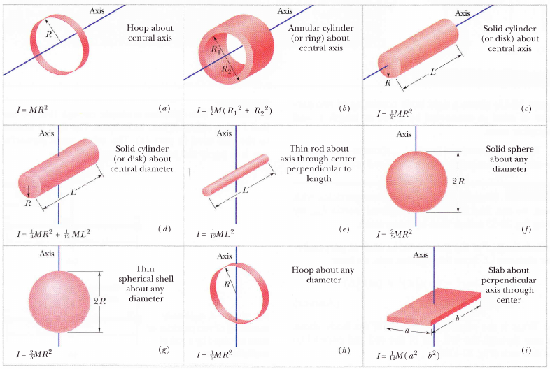
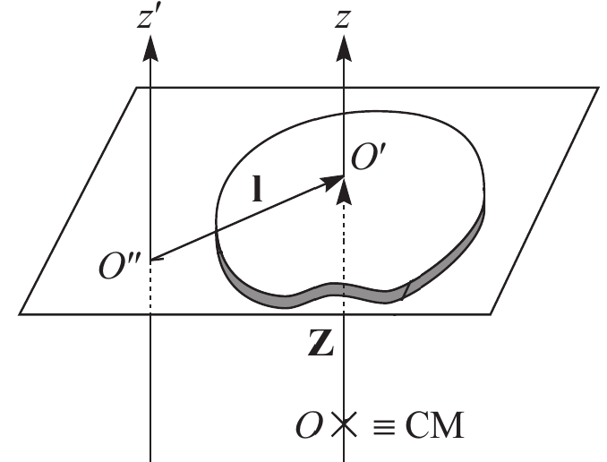
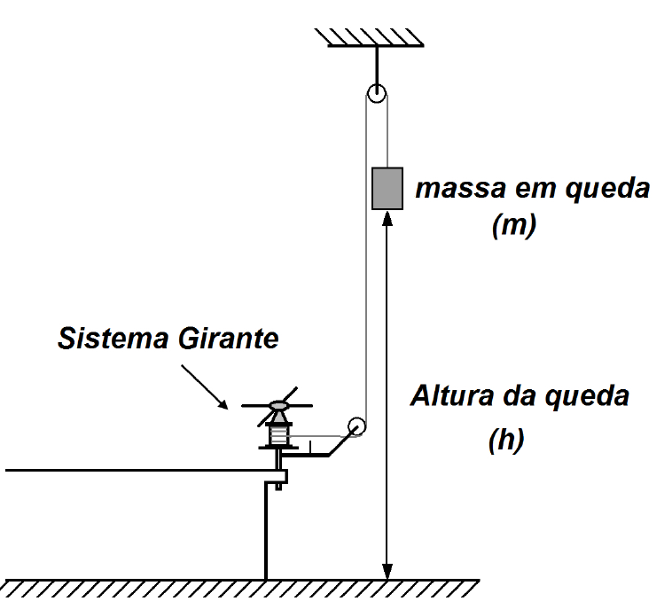
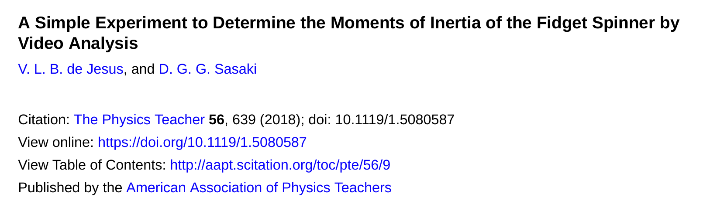
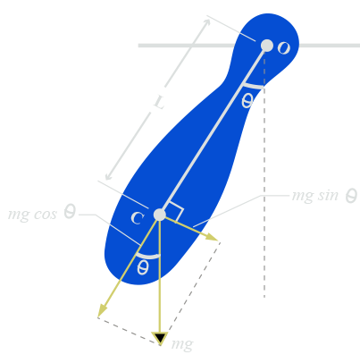

Momento de Inércia
Prof. Nícolas Morazotti
nicolas.morazotti@gmail.com
Introdução
Hoje não teremos vídeo do Universo Mecânico 😢
Corpos rígidos
- Corresponde a um conceito limite ideal
- Corpo indeformável
- Distância entre duas partículas do corpo é constante ao longo do movimento
- Nenhum corpo é perfeitamente rígido
Corpos rígidos em Translação

- Diz-se que o movimento de um corpo rígido é de translação quando a direção de qualquer segmento que une dois pontos não se altera durante o movimento
Corpos rígidos em Translação
- Todos os pontos sofrem o mesmo deslocamento no mesmo intervalo de tempo
- Velocidade e aceleração de translação de um corpo rígido
- Movimento é equivalente ao de um ponto material
Corpos rígidos em Rotação

Corpos rígidos em Rotação

- Em contrapartida, podemos, em vez disso, fixarmos dois pontos \(A\) e \(B\) de um corpo rígido, bem como todos os pontos da reta que passa por ambos
- Pontos fora de reta têm de manter sua distância a tal eixo constante
- \(\overline{AB}\) é chamado eixo de rotação: todas as partículas descrevem círclos com centro em tal eixo
- Giram ângulos iguais em mesmo intervalo de tempo
Corpos rígidos em Rotação
- Rotação de um corpo rígido: ponto material se move circularmente ao redor do eixo de rotação
- Única coordenada: ângulo de rotação
Translação e Rotação de Corpos Rígidos
Translação de Corpos Rígidos
- Por terem a mesma velocidade \(v\) de translação, definimos o momentum \(p\) do sistema como \(p = Mv\)
- \(2^{\text{a}}\) lei de Newton:
- \(F = \frac{\mathrm{d}p}{\mathrm{d}t} = Ma\)
Translação de Corpos Rígidos
- \(F = \frac{\mathrm{d}p}{\mathrm{d}t} = Ma\)
- Massa \(M\): inércia \(\to\) dificuldade para alterar a quantidade de movimento do corpo
- Quanto maior a massa, maior a força necessária para acelerá-lo
Rotação de Corpos Rígidos
- Para descrever o movimento de rotação, descrevemos um raciocínio análogo
- Da mesma maneira que tínhamos uma dada velocidade \(v\) para a translação, teremos uma velocidade angular \(\omega\) para a rotação
- No caso de rotação, as velocidades \(v_i\) são distintas
Rotação de Corpos Rígidos
- Associa-se a um corpo em rotação uma "quantidade de movimento angular" - formalmente chamada de momentum angular \(L\)
- \(L = I\omega\)
- \(I\) é seu momento de inércia
Rotação de Corpos Rígidos
- Por analogia,
- \(\tau = \frac{\mathrm{d}L}{\mathrm{d}t}=I\alpha\)
- \(\tau\) é o torque, \(\alpha\) é a aceleração angular
Rotação de Corpos Rígidos
- As representações da \(2^{\text{a}}\) lei de Newton para um corpo rígido em translação e rotação são matematicamente equivalentes
- Assim como \(M \leftrightarrow\) dificuldade de alterar \(p\), \(I \leftrightarrow\) dificuldade de alterar \(L\)
Relações de grandezas
| Grandeza | Translação | Rotação |
|---|---|---|
| Inércia | \(M\) | \(I\) |
| Deslocamento | \(s=r\theta\) | \(\theta\) |
| Velocidade | \(v=r\omega\) | \(\omega\) |
| Aceleração | \(a=r\alpha\) | \(\alpha\) |
| Momentum | \(p=mv\) | \(L=I\omega\) |
| \(2^{\text{a}}\) lei de Newton | \(F = \dot{p}\) | \(\tau = \dot{L}\) |
Cálculo do Momento de Inércia
\(I\): caso discreto
No caso em que o corpo é constituído de \(N\) partículas, temos
\(I\): caso contínuo
Em contrapartida, para um corpo contínuo, a expressão anterior se torna um limite do contínuo:
O momento de inércia passa a depender da geometria do corpo em questão.
\(I\): caso contínuo

\(I\): caso contínuo
Em geral, os momentos de inércia são difíceis de se calcular para figuras não regulares, mas têm a forma
\begin{align*} I &= CMr^2 \end{align*}- \(C\) depende da geometria do corpo
Teorema de Steiner
- A definição a partir da integral é sempre válida, mas difícil de se calcular, principalmente em relação a eixos arbitrários.
- Para isso, contamos com o Teorema dos Eixos Paralelos.
Teorema de Steiner
- Se conhecemos o momento de inércia \(I_{cm}\) de um eixo que passa pelo centro de massa, o momento de inércia em relação a um eixo paralelo pode ser calculado

Teorema de Steiner
Objetivos do Módulo 3
- Determinar experimentalmente o momento de inércia de corpos com geometrias regulares e irregulares
Objetivos do Módulo 3
- Determinar experimentalmente o momento de inércia de corpos com geometrias regulares e irregulares
- Determinar experimentalmente a constante adimensional \(C\) para corpos de geometria regular e compará-la com a previsão teórica para a geometria esperada
Objetivos do Módulo 3
- Determinar experimentalmente o momento de inércia de corpos com geometrias regulares e irregulares
- Determinar experimentalmente a constante adimensional \(C\) para corpos de geometria regular e compará-la com a previsão teórica para a geometria esperada
- Validação do método experimental empregado visando a determinação do momento de inércia de corpos com formatos arbitrários
Objetivos do Módulo 3
Equipamentos disponíveis
- Suporte para equilíbrio de corpos
- Corpos com diferentes massas e geometrias
- Trena
- Paquímetro analógico
- Micrômetro analógico
- Cronômetro digital
- Balança digital de precisão
- Tripé para filmagem
Sistema girante

O pêndulo físico

O pêndulo físico

O pêndulo físico
- Pêndulo físico de massa \(m\), momento de inércia \(I\) ao redor do pivô \(O\)
- Centro de massa está a \(\ell\) de \(O\)
- Quando oscila, deslocamento dado pelo ângulo \(\theta\)
O pêndulo físico
- Na posição indicada pela figura, torque restaurador \(\tau\)
- \(\tau = r_{\perp} F = -\ell [mg\sin(\theta)]\)
- Direção positiva se afasta da vertical
O pêndulo físico
- \(\tau = r_{\perp} F = -\ell [mg\sin(\theta)]\)
- \(2^{\text{a}}\) lei de Newton para rotações:
- \(\tau_R = \dot{L} = I\alpha = I \frac{\mathrm{d}^2\theta}{\mathrm{d}t^2}\)
O pêndulo físico
Unimos as equações
- \(\tau = r_{\perp} F = -\ell [mg\sin(\theta)]\)
- \(\tau_R = \dot{L} = I\alpha = I \frac{\mathrm{d}^2\theta}{\mathrm{d}t^2}\) em
- \(I \ddot{\theta} = - mg\ell \sin(\theta)\)
O pêndulo físico
- \(I \ddot{\theta} = - mg\ell \sin(\theta)\)
- \(I \ddot{\theta} + mg\ell \sin(\theta) = 0\)
- \(\ddot{\theta} + \frac{mg\ell}{I} \sin(\theta) = 0\)
- ⚠️ COMPLICADO ⚠️
O pêndulo físico
- \(\ddot{\theta} + \frac{mg\ell}{I} \sin(\theta) = 0\)
As soluções exatas dessa equação vêm de uma coisa chamada integral elíptica
- Por sorte, podemos utilizar a expansão
- \(\sin(\theta)=\theta-\frac{\theta^3}{3!}+\frac{\theta^5}{5!}-\cdots\)
O pêndulo físico
- \(\sin(\theta)\approx\theta-\frac{\theta^3}{3!}+\frac{\theta^5}{5!}-\dots\)
O pêndulo físico
- Com a aproximação \(\sin(\theta)\approx\theta\), para \(\theta<6^{\circ}\), temos
- \(\frac{\mathrm{d}^2\theta}{\mathrm{d}t^2} + \omega_0^2\theta = 0\)
- \(\omega_{0} = \sqrt{\frac{mg\ell}{I}}\)
- \(\omega_0 = \frac{2\pi}{T}\)
- \(T = 2\pi \sqrt{\frac{I}{mg\ell}}\)
O pêndulo físico
Equação de movimento
\(\theta(t) = \theta_0\cos(\omega_0t+\phi)\)
O pêndulo físico
Equação de movimento
\(\theta(t) = \theta_0\cos(\omega_0t+\phi)\)
- Solução harmônica, movimento de período \(T = 2\pi/\omega_0\)
- Uma análise mais realista mostra que a amplitude \(\theta_0\) é mantida constante durante um breve período de tempo de oscilação
- Há dissipação de energia durante o movimento
O pêndulo físico
Equação de movimento
\(\theta(t) = \theta_0 e^{-\frac{\gamma}{2}t} \cos(\omega't+\phi)\)
- \(\gamma\) denota perdas por atrito
- \(\omega' = \sqrt{\omega_0^2 - \frac{\gamma^2}{4}}\) é a frequência amortecida
- Se \(\gamma\) é muito pequeno \(10^{-4}\), \(\omega'\approx\omega_0\)
O pêndulo físico - baixo amortecimento
Equação de movimento
\(\theta(t) = \theta_0 e^{-\frac{\gamma}{2}t} \cos(\omega_{0}t+\phi)\)
A partir da determinação do período de oscilação, pode-se determinar experimentalmente o momento de inércia do corpo no eixo de rotação do pivô:
\begin{align*} I= \frac{mg\ell T^{2}}{4\pi^2} \end{align*}- Teorema de Steiner: \[I_{CM} = m\ell^2 \left( \frac{gT^2}{4\pi^2\ell}-1 \right)\]
O pêndulo físico - baixo amortecimento
Equação de movimento
\(\theta(t) = \theta_0 e^{-\frac{\gamma}{2}t} \cos(\omega_{0}t+\phi)\)
- Teorema de Steiner: \[I_{CM} = m\ell^2 \left( \frac{gT^2}{4\pi^2\ell}-1 \right)\]